Les MarnièresLes MarnièresLes plantes commandées chez Semailles
Amarante tête d'éléphantFève d'AguadulceAmarante Queue de renard rougeLin Bleu (engrais vert)Chou kalePois à rames mangetout
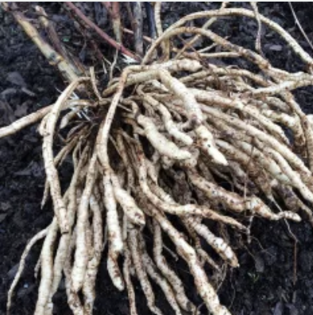
Chervis
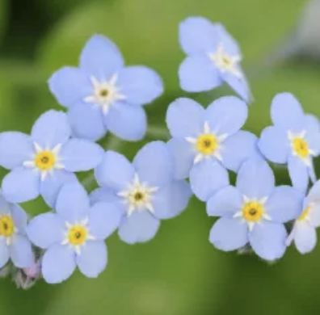
MyosotisArmoise annuelleCôte de bette à cardes rouges
Les Marnières
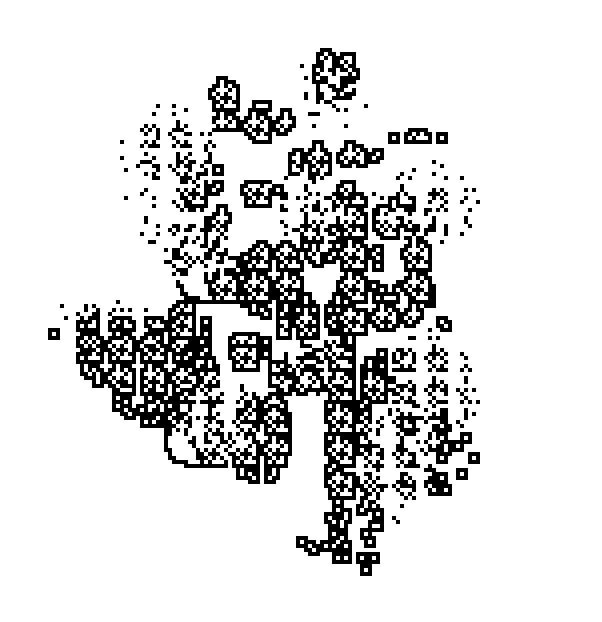
Good soilSi je ramasse une poignée de terre et trouve quatre vers ou plus, je travaillerai avec toi.
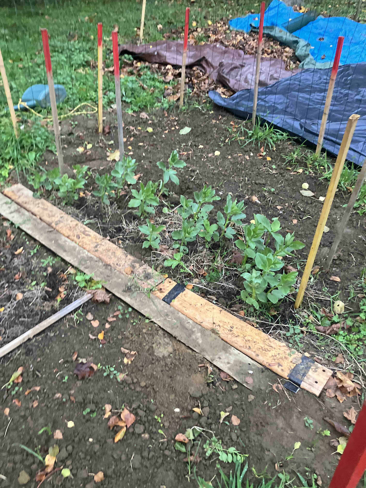
Broad beans (fèves) après un mois et demi — en espérant qu'elles passent l'hiver.
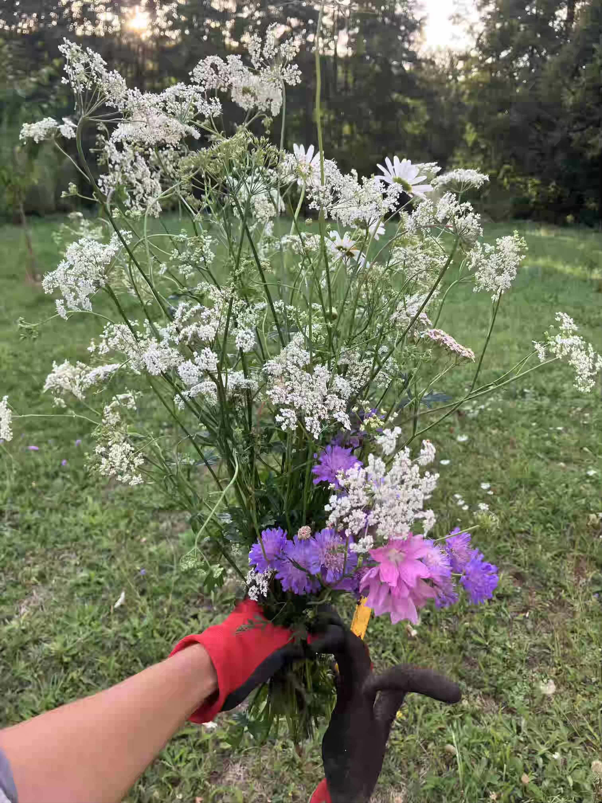
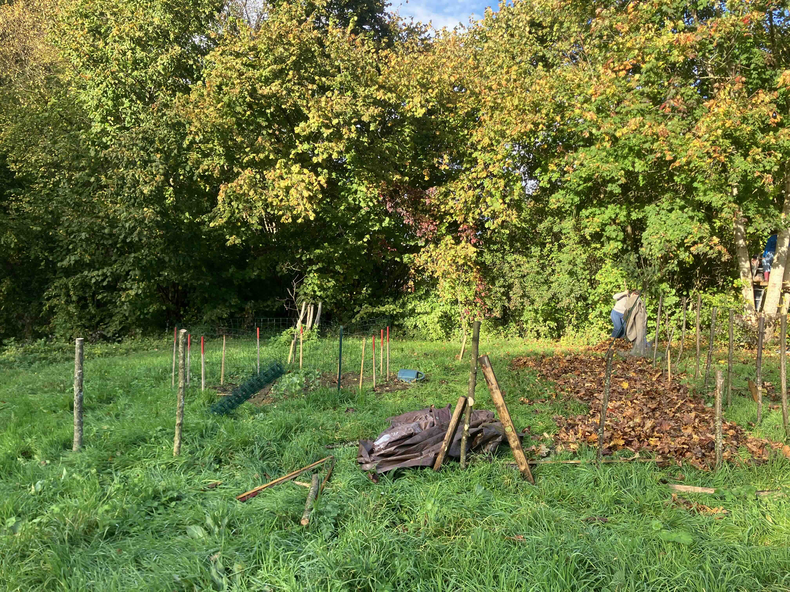
Alix ramasse un tas de feuilles.
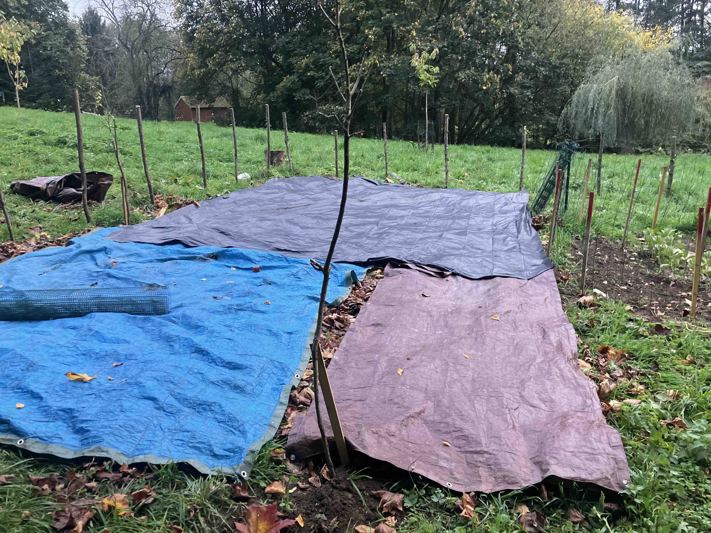
Premier essai pour faire un sol fertile durant l'hiver. Un grand tas de feuilles sous de larges bâches plastiques.
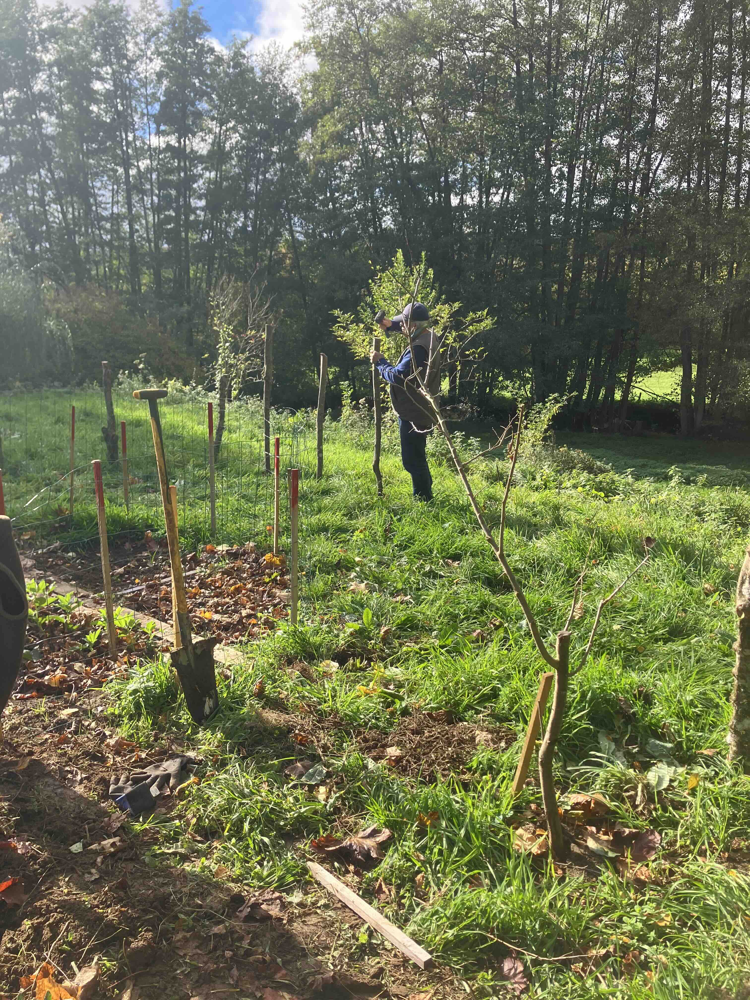
Mon père, contrairement à moi, est dans l'anticipation — il aime ajouter des clôtures partout autour des plantes.
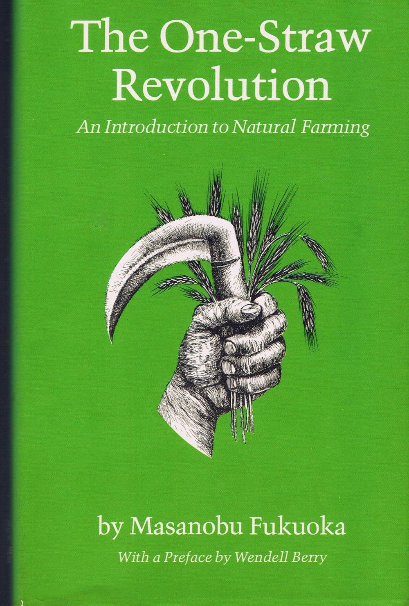
« Quand on pense qu'on commence à comprendre la nature, on peut être sûr qu'on est sur la mauvaise piste. »Quatre principes : ne pas cultiver, pas de fertilisant chimique, pas d'herbicide, pas de dépendance aux produits chimiques.« J'aspirais à une manière de cultiver naturelle, qui rende le travail plus aisé et non plus dur. »
À trouver
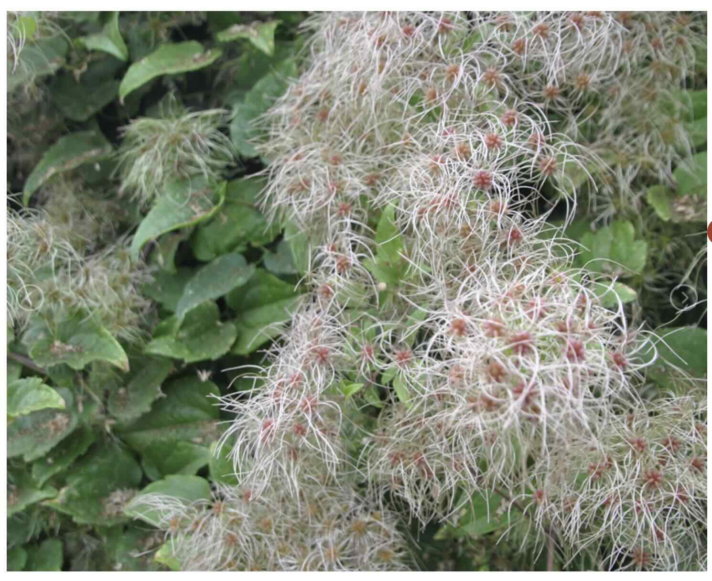
Old Man's Beard (Clematis vitalba)
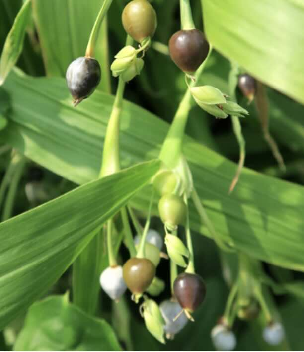
Larme de Job (Coix lacryma-jobi) — graines en perles
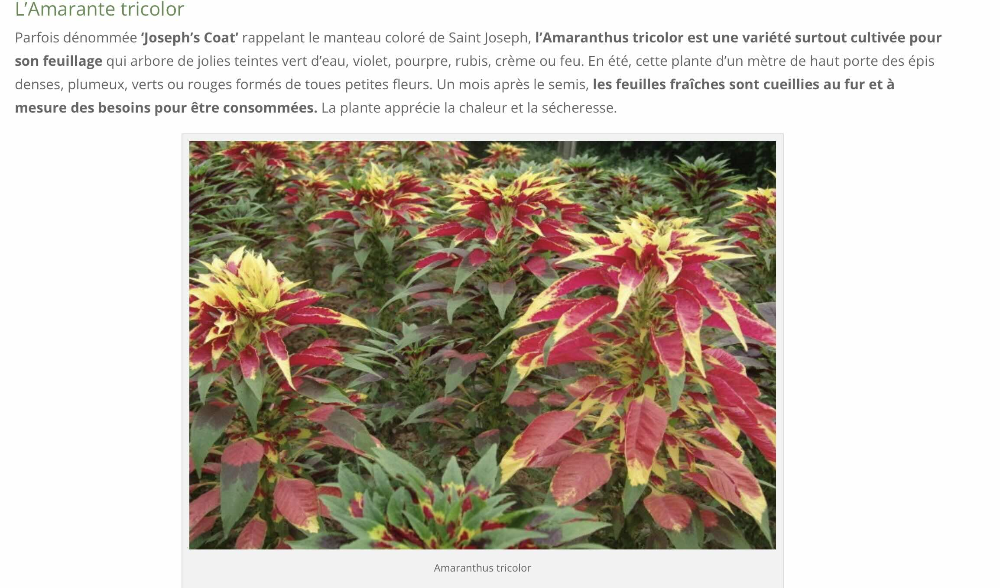
Amaranthus tricolor, Joseph's Coat
Cliquer sur une image pour en faire apparaître une autre
Cliquez pour révélerCliquez pour révélerCliquez pour révélerCliquez pour révélerCliquez pour révélerCliquez pour révéler
Barry Pepper : jardiner ou le pouvoir de planter sans attendre de résultats
gardening or the power of sowing seeds and roots


.png)